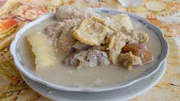
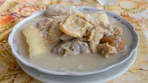

Rondon
Consiste en una sopa a base de leche de coco, cocida con diferentes tipos de productos del mar (pescado, cangrejos, langostas pequeñas u otros mariscos) así como plátano, ñame, tomate y cebolla, y se sazona con varios condimentos.


Consiste en una sopa a base de leche de coco, cocida con diferentes tipos de productos del mar (pescado, cangrejos, langostas pequeñas u otros mariscos) así como plátano, ñame, tomate y cebolla, y se sazona con varios condimentos.
